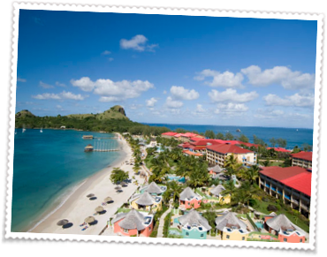
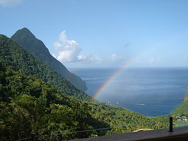

Send request for VISA invitation letter to Angelos Stavrou with the following information:
- Your name as it appears on your passport
- Current postal mailing address
- The name of the conference you wish to attend
- Your Registration Confirmation Number
- If you have any papers accepted for the conference, please provide the title
Please note visa invitation letters are issued via email by PDF and the original is mailed to your current postal address.
|  |
RAID 2013 will be held at Bay Gardens Beach Resort and Spa, the northwestern-most of three Bay Gardens properties. Please consult the property map for assistance in navigating to the resort. |
|  |
From Wikipedia:
One of the Windward Islands, it was named after Saint Lucy of Syracuse by the French, the first European colonizers. They signed a treaty with the native Carib people in 1660. England took control of the island from 1663 to 1667; in ensuing years, it was at war with France 14 times and rule of the island changed frequently (it was seven times each ruled by the French and British). In 1814, the British took definitive control of the island. Because it switched so often between British and French control, Saint Lucia was also known as the "Helen of the West Indies". |
Getting There
There are several daily International flights from various cities in the US, Canada, and Europe. St. Lucia is serviced by two airports: Hewanorra International Airport (airport code: UVF) is the international airport; George Charles Airport (airport code: SLU) is the regional airport. The drive from UVF to the hotel is about 1 hour and 15 mins. (The hotel and the international airport are at opposite ends of the island). The ride from George Charles airport is less than 20 mins. The hotel offers free transfers from SLU.
Visas
Depending on your citizenship, you may need a visa to visit St. Lucia. Please see the St.Lucia Government’s website for a list of territories whose citizens do not require a visa to entry the island.
RAID 2012 Credit - Stefano Ortolani